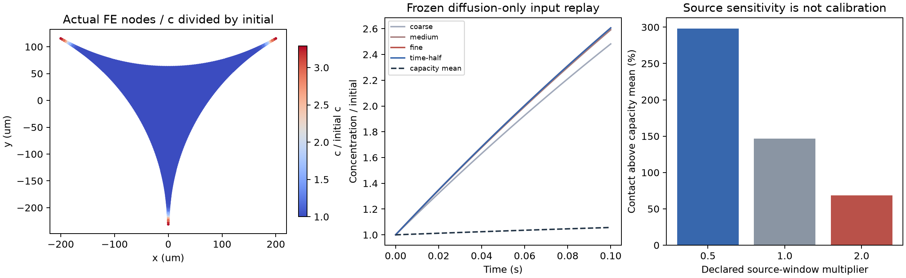

建立Plateau边界截面、界面Henry储存与二维扩散算子。最细12607节点、24510三角形，面积误差约0.0109%。完成六组加密/源窗口计算和七项数值检查。

相邻空间加密的接触浓度变化约0.558%，时间步减半约0.000905%。原径向网格产生的下冲、另一集总方式的对称性误差均已保留并修正，没有裁剪场值。下一步实现Stokes/Marangoni速度场及守恒对流。
参数、来源与检查 · 模型范围 · 保留的初始下冲结果 · 保留的对称性未通过结果 · 实际节点场CSV · 网格连接CSV · 矢量PDF